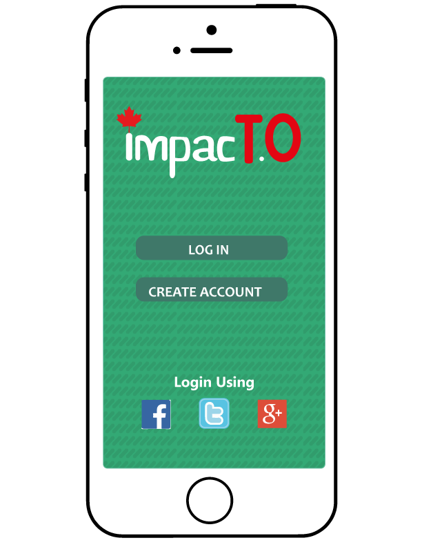
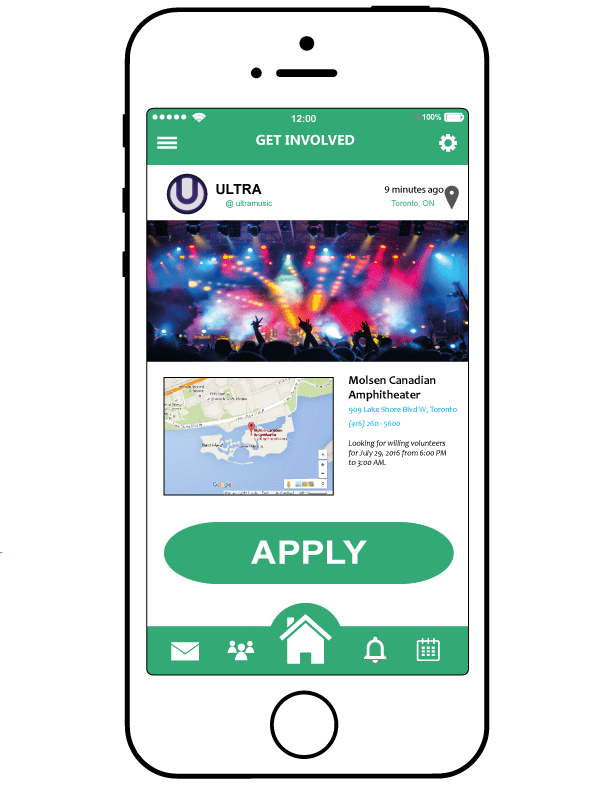
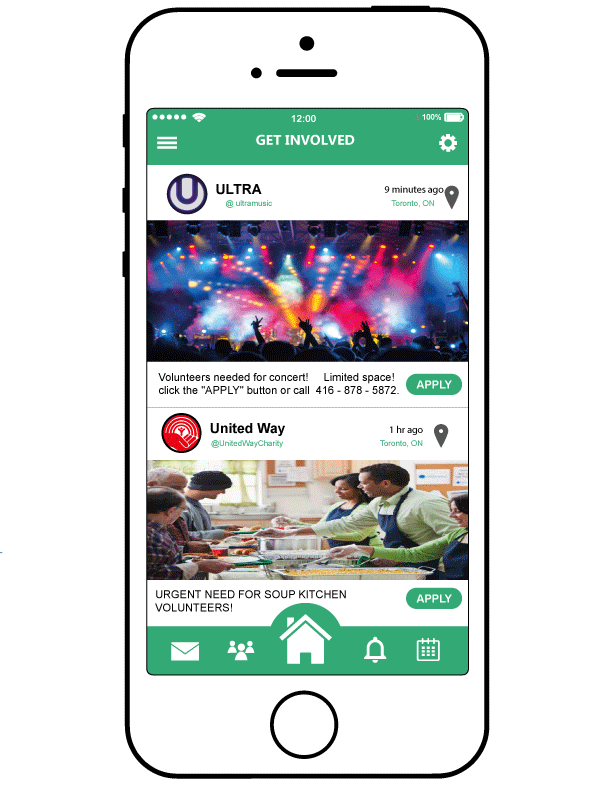
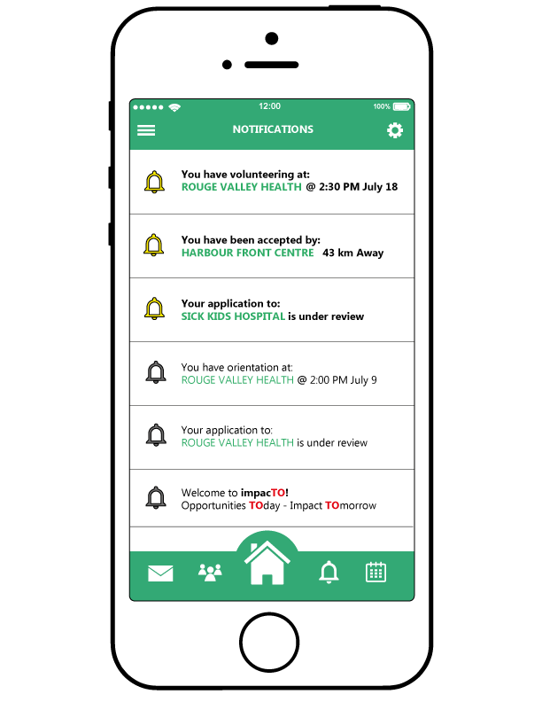

What is ImpacTO?
ImpacTO is an organization focused on bridging the gap between our youth and the community. In order to do so, we have developed an application which allows for
students to discover volunteering opportunities in their respective fields of interest in their own community! By making use of artificial intelligence and machine
learning, our app is able to efficiently and effectively display volunteering opportunities specifically tailored towards the needs of the students. Our mission is to:
enable students to build a successful network, gain invaluable skills and experience, and make a meaningful impact in the community!
App Information
Login Page:
This is the login page, which is the first page you see the first time you open the APP. It is here where the user is able to login with their social media, or create an account with
impacTO. After logging in, this page will no longer show up, unless prompted to by the user.
Home Page:
After logging in, this will be the main page, similar to your Facebook or Instagram feed. This page uses machine learning in order to effectively display volunteering opportunities specifically tailored towards the needs of the students. The page displays the volunteer opportunities, along with a brief amount of information on each topic, such as the location, when it was posted, and the contact information. Once clicking on the opportunity, it will take you to another page, giving more information and detail on the opportunity, such as the directions on a map, the age/experience requirements, the contact information, and the opportunity to apply.
Notifications/Calendar:
Finally the last page is the notifications/calendar page, which notifies the user of upcoming registered events, and if they have been accepted as volunteers.

Customer Reviews
Patricia: I did not think there would be many opportunities in my field of interest but I was shocked to find so many different options and so many different interests. This app is genius.
Jordan: This app is the reason I completed my high school volunteer hours on time, and I could find things I was interested in with ease.
Lebron: This app gave me the motivation to volunteer much more often than I thought. Love it.
Devin: I love the endless opportunities and being able to search based on my interests.